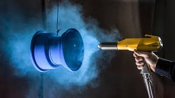

CARACTERISTICAS

La pintura electrostática es un recubrimiento en polvo que se aplica mediante electricidad
estática para crear un acabado duro y resistente. Se utiliza en piezas metálicas y es una buena
alternativa para crear aislamiento eléctrico y superficies resistentes a la corrosión y abrasión.
La pintura electrostática se aplica con una pistola pulverizadora que carga electrostáticamente
las partículas de pintura, las cuales son atraídas hacia la superficie a pintar. Para fijar la pintura,
se introduce la pieza en un horno a una temperatura de entre 170 y 210 grados, lo que funde
los polímeros del recubrimiento y los adhiere a la pieza.
La pintura electrostática tiene las siguientes características:
-
Es una mezcla de cargas minerales, pigmentos y resinas en forma de partículas finas.
Es reciclable y puede ahorrar hasta un 97% en el momento de aplicarse.
Existen tres tipos de pintura electrostática: polyester, epoxi y epoxi-polyester.
La pintura polyester es la más adecuada para exteriores.
La pintura epoxi es resistente a agresiones químicas, pero no a los rayos ultravioletas.
La pintura epoxi-polyester combina las propiedades de las dos anteriores.
BENEFICIOS
La pintura electrostática tiene varios beneficios, entre ellos:
- La pintura electrostática es muy resistente a rayones, impactos, dobleces y agentes químicos. También es resistente a cambios ambientales, temperaturas y rayos UV. Curado rápido
- pintura electrostática se cura en un horno industrial en un tiempo de 20 a 30 minutos, lo que es mucho más rápido que la pintura líquida, que puede tardar hasta un día. Menor impacto ambiental
- La pintura electrostática se fabrica a base de minerales, resinas y pigmentos sin disolventes, por lo que reduce la emisión de gases y no deja compuestos orgánicos volátiles. Reciclaje
- La pintura electrostática no aplicada se puede reciclar en más del 97%. Los residuos de polvo que se generan se pueden mezclar con polvo virgen para reciclarlos. Fácil aplicación
- La pintura electrostática se aplica de forma sencilla y no requiere de personal calificado. Homogeneidad
- La atracción electrostática permite que la capa aplicada sea homogénea. Amplia variedad de colores y texturas
- La pintura electrostática está disponible en una gran variedad de colores, texturas y efectos.
PROCESO
El proceso de aplicación de pintura electrostática, también conocida como pintura en polvo, se lleva a cabo de la siguiente manera:
- carga electrostáticamente a las partículas de polvo con una pistola.
- carga electrostática atrae las partículas de polvo hacia la superficie que está conectada a tierra.
- pieza se introduce en un horno de curado para fundir las partículas y adherirlas de forma permanente a la superficie.